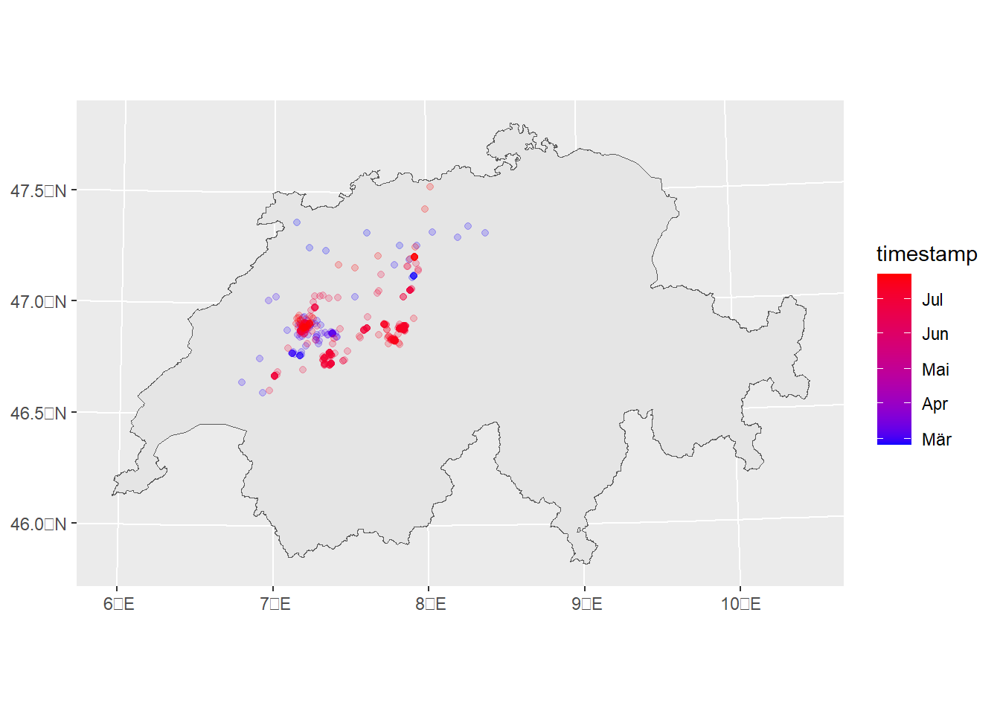
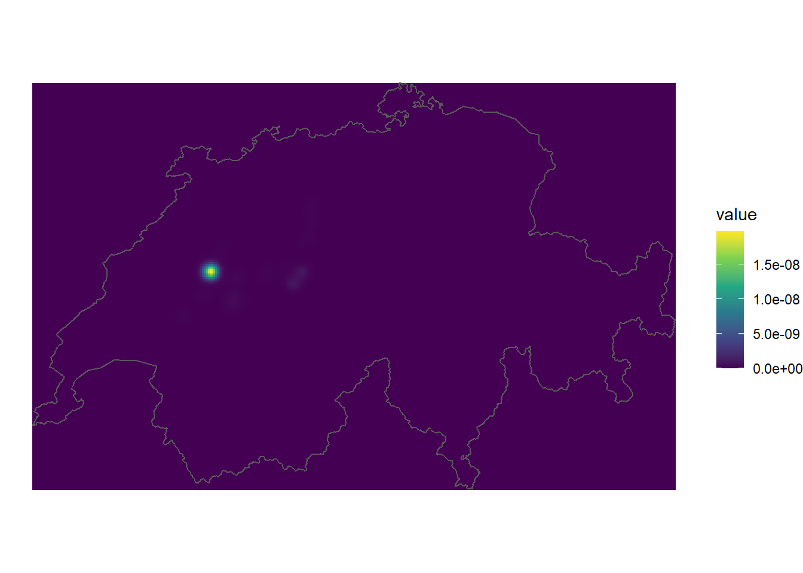
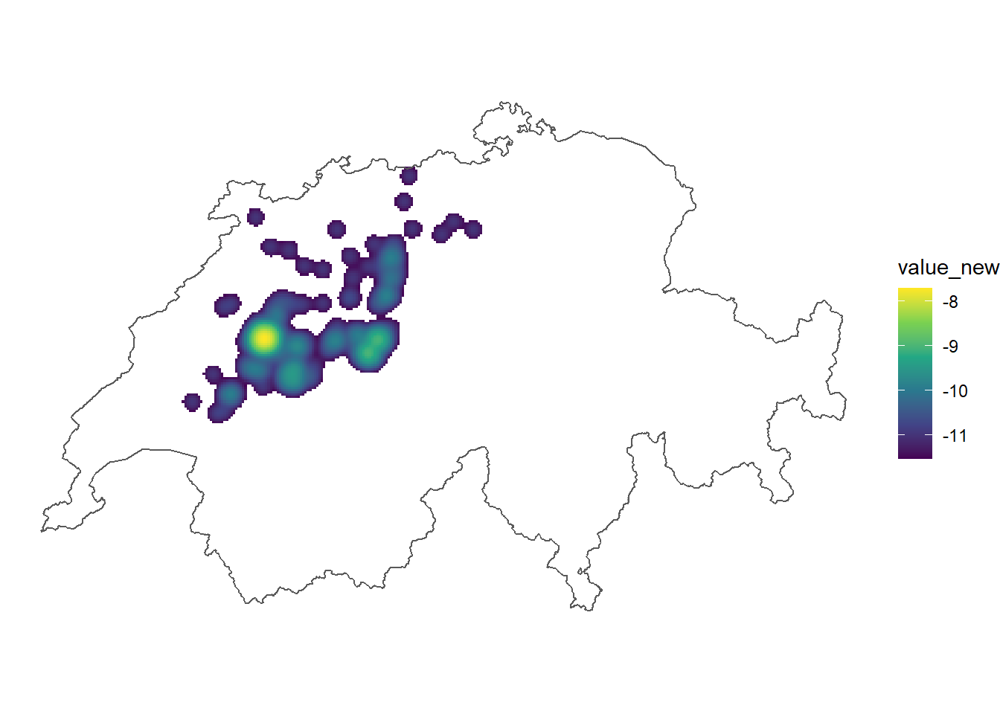
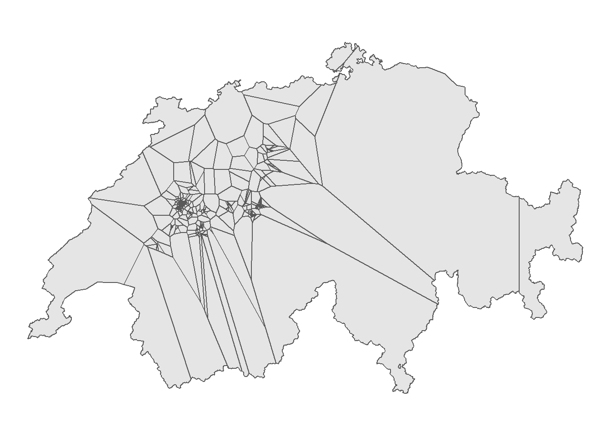

library(sf)
library(dplyr)
library(ggplot2)
library(MASS) # <- ggf. installieren!Rauman 2: Übung C
Nun wollen wir für die bereits verwendeten Datensätze luftqualitaet.gpkg und rotmilan.gpkg Dichteschätzungen durchführen. Ladet dafür die notwendigen Package und ladet bei Bedarf die Datensätze herunter.
Aufgabe 1: Rotmilan Bewegungsdaten visualisieren
Die erste Frage, die bei solchen Bewegungsstudien typischerweise gestellt wird, lautet: Wo hält sich das Tier hauptsächlich auf? Um diese Frage zu beantworten, kann man als erstes einfach die Datenpunkte in einer einfachen Karte visualisieren. Erstellt zur Beantwortung dieser Frage nachstehende Karte.

Aufgabe 2: Kernel Density Estimation berechnen
In einer ersten Annäherung funktioniert dies, doch wir sehen hier ein klassisches Problem des “Overplotting”. Das heisst, dass wir durch die Überlagerung vieler Punkte in den dichten Regionen nicht abschätzen können, wie viele Punkte dort effektiv liegen und ggf. übereinander liegen. Es gibt hier verschiedene Möglichkeiten, die Punktdichte klarer zu visualisieren. Eine unter Biologen sehr beliebte Methode ist die Dichteverteilung mit einer Kernel Density Estimation (KDE). Dies v.a. darum, weil mit KDE das Habitat (Streifgebiet) eines Tieres abgeschätzt werden kann. Homeranges werden oft mit KDE95 und Core Areas mit KDE50 definiert (Fleming C., Calabrese J., 2016).
Ähnlich wie beim IDW sind auch die verfügbaren KDE-Funktionen in R etwas kompliziert in der Handhabung. Damit wir dieses Verfahren aber dennoch auf unsere Rotmilan-Daten anwenden können, haben wir eine eigene KDE-Funktion erstellt, die wir Euch zur Verfügung stellen.
Hier gilt das gleiche wie schon bei der Funktion my_idw(): Wir ermutigen alle, die dafür Kapazität haben, unsere Function eingehend zu studieren und allenfalls ganz auf die Funktion zu verzichten und stattdessen direkt MASS zu verwenden. Wenn ihr mit unserer Funktion arbeiten möchtet, müsst ihr den unten stehenden Code in euer Skript kopieren und ausführen.
my_kde <- function(points,cellsize, bandwith, extent = NULL){
library(MASS)
library(sf)
library(tidyr)
if(is.null(extent)){
extent_vec <- st_bbox(points)[c(1,3,2,4)]
} else{
extent_vec <- st_bbox(extent)[c(1,3,2,4)]
}
n_y <- ceiling((extent_vec[4]-extent_vec[3])/cellsize)
n_x <- ceiling((extent_vec[2]-extent_vec[1])/cellsize)
extent_vec[2] <- extent_vec[1]+(n_x*cellsize)-cellsize
extent_vec[4] <- extent_vec[3]+(n_y*cellsize)-cellsize
coords <- st_coordinates(points)
mat <- kde2d(coords[,1],coords[,2],h = bandwith,n = c(n_x,n_y),lims = extent_vec)
mydf <- as.data.frame(mat[[3]])
colnames(mydf) <- mat[[2]]
mydf$X <- mat[[1]]
pivot_longer(mydf, -X,names_to = "Y",names_transform = list(Y = as.numeric))
}Die Parameter der Funktion sollten relativ klar sein:
points: Ein Punktdatensatz aus der Classsfcellsize: Die Zellgrösse des output-Rastersbandwith: Der Suchradius für die Dichteberechnungextent(optional): Der Perimeter, in dem die Dichteverteilung berechnet werden soll. Wenn kein Perimeter angegeben wird, wird die “bounding box” vonpointsgenutzt.
Wenn wir nun mit my_kde() die Dichteverteilung berechnen, erhalten wir ein data.frame mit X und Y Koordinaten sowie eine Spalte value zurück. Nutzt diese drei Spalten mit geom_raster() um eure Daten mit ggplot zu visualisieren (aes(x = X, y = Y, fill = value).
rotmilan_kde <- my_kde(points = rotmilan,cellsize = 1000, bandwith = 10000, extent = schweiz)
rotmilan_kde# A tibble: 77,129 × 3
X Y value
<dbl> <dbl> <dbl>
1 2485410. 1075268. 0
2 2485410. 1076268. 0
3 2485410. 1077268. 0
4 2485410. 1078268. 0
5 2485410. 1079268. 0
6 2485410. 1080268. 0
7 2485410. 1081268. 0
8 2485410. 1082268. 0
9 2485410. 1083268. 0
10 2485410. 1084268. 0
# … with 77,119 more rows
Die Kernel Density Estimation ist nun sehr stark von den tiefen Werten dominiert, da die Dichte in den meisten Zellen unseres Untersuchungsgebiets nahe bei Null liegt. Wie erwähnt sind Wissenschaftler häufig nur an den höchsten 95% der Werte interessiert. Folge folgende Schritte um das Resultat etwas besser zu verantschaulichen:
- Berechne die 95. Perzentile aller Werte mit der Funktion
quantileund benne diesenq25 - Erstelle eine neue Spalte in
rotmilan_kde, wo alle Werte tiefer alsq25NAentsprechen - (Optional): Transformiere die Werte mit log10, um einen differenzierteren Farbverlauf zu erhalten
Wir können die tiefen Werte ausblenden, indem wir nur die höchsten 5% der Werte darstellen. Dafür berechnen wir mit raster::quantile die 95. Perzentile aller Werte und nutzen diesen Wert als “Grenzwert” für die Darstellung.
Zusätzlich hilft eine logarithmische Transformation der Werte, die Farbskala etwas sichtbarer zu machen.

Aufgabe 3: Dichteverteilung mit Thiessen Polygonen
Thiessen Polygone bieten eine spannende Alternative um Unterschiede in der Dichteverteilung von Punktdatensätzen zu visualisieren. Wir wollen dies nun ausprobieren und konstruieren zum Schluss die Thiessenpolygone für die Rotmilan-Daten für das Untersuchungsgebiet Schweiz. Nutze die Anleitung für das Erstellen von Thiessenpolygonen aus der Übung B um Thiessenpolygone für die Rotmilanpositionen zu erstellen.
